Objects: Deep Dive
Why the implementation looks like this
Dot Notation Resolves at Parse Time
else:
tokens = tokens[1:]
if tokens[0]["tag"] != "identifier":
raise SyntaxError(
f"Expected a field name after '.', got {tokens[0]}")
index = {"tag": "string", "value": tokens[0]["value"]}student.score and student["score"] parse
into the exact same "complex" node. Nothing past this point
in the parser, and nothing in the evaluator, ever learns that dot syntax
was used.
One AST Node, Branching By Runtime Type
if type(base) is dict:
if type(index) is not str:
raise TypeError("Object key must be a string")
return base[index], None
if type(base) not in (list, str):
raise TypeError("Indexing requires a list or string")
return base[require_index(index, base)], NoneReading a "complex" node asks what base
turned out to be at runtime, not what syntax produced the node. A dict
gets direct key access; a list or string gets
require_index’s bounds-checked lookup.
Growth Rules Differ By Container, Not By Mechanism
if type(base) is dict:
if type(index) is not str:
raise TypeError("Object key must be a string")
key = index
elif type(base) is list:
key = require_index(index, base)
...
destination[key] = valueOne store, destination[key] = value, same line for both.
Everything above it decides what key is allowed to be.
Growth Rules, Proof
a = [1, 2];
a[5] = 1;Raises IndexError: Index out of range.
student = {"score": 87};
student.passed = true;
print(student);Prints {"score": 87, "passed": true}.
Keys Stay Unevaluated Until the Evaluator Runs
while True:
key, tokens = parse_expression(tokens)
tokens = require(tokens, ":", "Expected ':' after object key")
value, tokens = parse_expression(tokens)
fields.append((key, value))
...parse_object_expression builds an ordered list of
(key_ast, value_ast) pairs. It cannot build a Python dict
yet; nothing has evaluated a key.
Duplicate Detection Blocks the Next Value Before It Runs
for key_ast, value_ast in ast["fields"]:
key, status = evaluate(key_ast, environment)
if status is not None:
return key, status
if type(key) is not str:
raise TypeError("Object key must be a string")
if key in result:
raise ValueError(f"Duplicate object key: {key!r}")
value, status = evaluate(value_ast, environment)
...Each field’s key is fully evaluated and checked before its own value expression ever runs.
Equality Generalized From List-Only to List-and-Object
# Chapter 9
if type(left) is list and type(right) is list:# Chapter 10
if type(left) in (list, dict) and type(left) is type(right):One extra type in a tuple, plus a same-type check. Everything below that line, the identity shortcut and the pair-tracking set, is unchanged.
Display Generalized the Same Way as Equality
if type(value) in (list, dict):
...
if type(value) is dict:
return "{" + ", ".join(...) + "}"
return "[" + ", ".join(...) + "]"vertex_repr’s ancestors set is the second
case of the same widening: it already existed in Chapter 9, for lists;
this chapter only broadens its type check and adds the dict-construction
branch.
Copying Is New, Not Generalized
vertex_copy and its memo dict do not exist
in Chapter 9 at all: no copy keyword, no deep-copy helper,
nothing to widen. Lists only ever got vertex_equal and
vertex_repr.
What carries over is the idea, not the code: track identities
on a mutable structure, adding an entry before recursing into it.
comparing and ancestors remove their entry on
the way back out, since they only need to know what is on the current
path. memo keeps every entry for the whole
copy() call, since a sibling reached later still needs to
find it.
Without a Memo Table, Sharing Breaks

data’s two arrows reach one child. A copier
with nothing to remember what it has already copied cannot tell its
second arrow is the same original as its first; it produces two
unrelated copies instead of one shared one.
The Memo Table Keeps Them One

The table itself: one entry, child’s identity
mapped to its copy. Both of mycopy’s arrows land on that
one entry’s value. The dashed arrow is a computed lookup by
id(child), not a stored reference; the solid arrows are the
real references.
The Memo Table, Proof
child = {"x": 1};
data = [child, child];
mycopy = copy(data);
mycopy[0].x = 99;
print(data[0].x);
print(mycopy[1].x);data[0].x stays 1: the copy did not
reach back into the original. mycopy[1].x becomes
99: mycopy[0] and mycopy[1] are
still the same object.
The Same Table Closes a Cycle

a = {};
a.self = a;
b = copy(a);The memo table’s second job: a has no base case for a
naive copier, since copying a.self means copying
a again, forever.
Two Dictionaries, Two Different Walks
# Object field read
return base[index], None# Identifier lookup
while True:
if identifier in env:
return env[identifier], None
if PARENT_KEY in env:
env = env[PARENT_KEY]
continue
raise ValueError(f"Unknown identifier: {identifier}")Both base and env are plain Python dicts.
Only one of these reads ever follows a chain.
What Carries Forward
The "complex" node absorbed a second suffix kind with
one new branch in one existing loop, not a second grammar.
vertex_equal and vertex_repr absorbed a second
container kind the same way: widen a type check, reuse the cycle-safety
bookkeeping as written. vertex_copy is different: it is new
code, for a need Chapter 9 never had, that reuses the same
identity-tracking idea rather than any existing implementation. The one
new question this chapter answered was growth, when is a destination
allowed to gain a key it never had, and the answer differs by container
on purpose. Chapter 9 already asked what “the target” means when it is
not just a name; this chapter answered it a second way, by string key
instead of position, and left that same question open once more, for
call arguments, next.